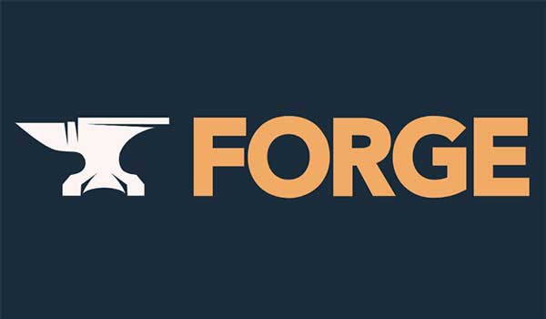

Tutorial de programacion de Mods
Evento organizado por Nacho conocido como Beta
La fecha del taller será el 27-03-2021 a las 12:00
El dia indicado en la fecha, Hamed Ignacio (Nacho) Benaisa Cruz impartirá un curso para realizar mods de Minecraft. Para el que no sepa que es un mod se trata de un añadido al juego que cambia modos de jugarlo, puede ir desde un simple mineral nuevo a una dimension con sus mecanicas y enemigos.
Ultimamente hemos podido ver que realizar mods para minecraft puede conseguirte, aparte de popularidad en la comunidad un trabajo dentro de las oficinas de Mojang como el caso de los creadores de Bukkit que han sido contratados para que su mod sea oficial. Debido a esto y que es un buen modo de conocer como funciona el juego hemos organizado un cursillo breve sobre como empezar a realizar mods. Este cursillo ha sido elaborado con la ayuda del modder Benimatic, creador del mod Twilight Forest.
El taller se realizará en Java, con lo que se recomienda conocer un poco las primitivas básicas, si se quiere conocer hagan click en la foto de la derecha para ir a una página para conocer un poco el lenguaje. Además de eso necesitaremos usar la API bajo la que funcionan todos los mods actualemente, la API forge, para ello pueden clickar en la foto de la derecha. En cuanto a sistema operativo se puede usar el que guste, sabemos que en el mundo de la programacion se usa más distribuciones de Linux, pero debido a que la compañia Mojang pertenece a Microsoft el taller se realizará en Windows.
Para obtener el link para la videollamada realizada a través de google meet se deberá enviar un mensaje por correo a betacraft82@gmail.com con el asunto [tutorialMods Mining Minds], se responderá con el link en un plazo máximo de 24 horas, en caso de que no llegue contactenos a través del correo de nuestra web

Para el taller es necesario el conocimiento de java
(Logo de java obtenido de us pagina oficial)
Para el taller es necesario tener la API Forge descargada
(Logo de forge obtenido de su pagina oficial)